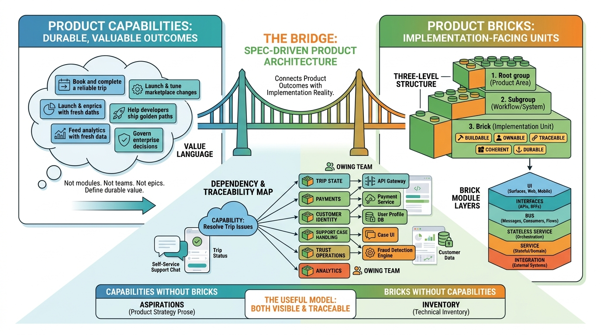

From Product Value To Architecture
Product Bricks and Capabilities

Image generated by Google Gemini (gemini-3-pro-image-preview)
From Product Value To Architecture

Image generated by Google Gemini (gemini-3-pro-image-preview)